{kind=link}

This issue is proposing a new design for the default frontend theme for Drupal 9 (targeted for inclusion in Drupal 9.1). Note this is separate from the new administration theme, Claro, which was just committed to core several days ago.
This new frontend theme will have a modern look and feel based on adjectives and principles that were identified during the design process (more on this below). It will be WCAG AA compliant, support updated functionality in Drupal, and is intended to feel modern going into the future. The theme is named “Olivero” after Rachel Olivero, who was an advocate for accessibility and a Drupal community member (more on that below).
The design of the current default theme (Bartik) has not changed since the release of Drupal 7 in January of 2011. While Bartik has proved itself to be versatile over the years, its design has aged with the years and fails to showcase Drupal’s state-of-the-art power and functionality.
We will work with the community to help ensure that the new theme is aligned with the above goals in order to create a successful theme.
The first step was to solicit community feedback within the Drupal Core ideas queue: [#3064880]. This issue confirmed that the idea to add a new theme is sought after by the community.
Once we knew our idea was valid and sought after by the community, we moved to identify the stakeholders for the design process that we deemed essential for the theme to be successful, and to help guide us throughout the process. The following community members were identified:
During the research phase, we worked with stakeholders to identify adjectives to help guide the visual design. We created a sliding scale exercise where stakeholders could add a points across several tone spectrums. Some of these were clearly one adjective or the other (“Formal” not “Casual”) while others highlight the importance of a balance (“Approachable” and “Official”).
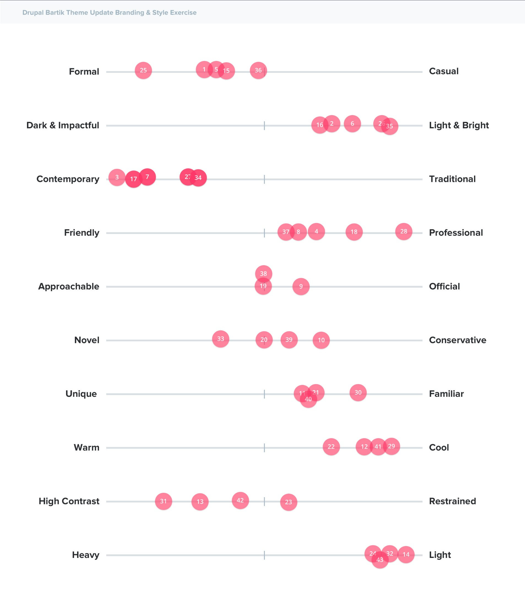
The below are keywords that were identified and will serve as the voice and tone of the new theme:
The following principles were established through research and collaboration, and are useful for guiding future additions and feedback for changes.
Once the design principles and the voice & tone were established, we then created 3 separate zoom mocks to explore how those styles could apply to pages and components. These were then presented to the stakeholders, who choose a design to move forward with.
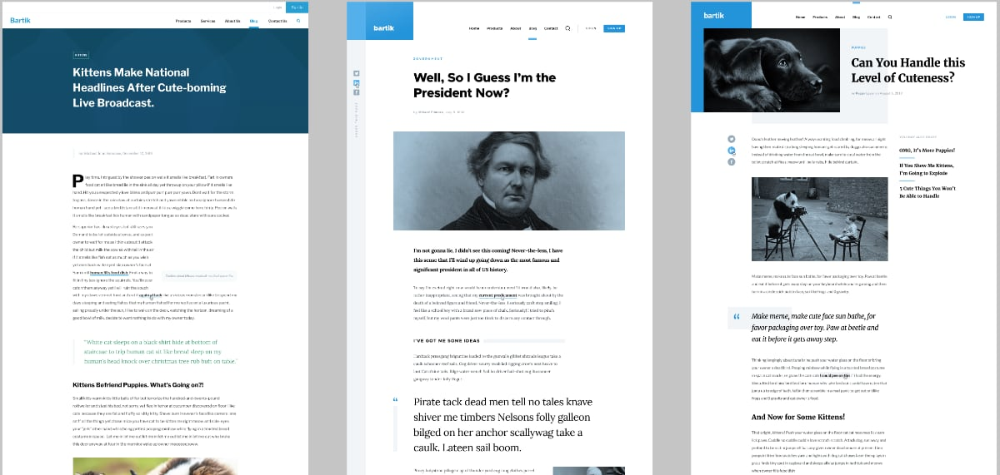
The chosen design was iterated upon, and once again brought in front of the stakeholders, who then provided additional feedback.
The design process continued with the addition of internal accessibility testing, which highlighted several contrast deficiencies that were subsequently fixed.
We then brought the designs to one of the Drupal core accessibility maintainers (thank you Rain!) to validate accessibility, give additional accessibility feedback, and answer some lingering questions.
The goal is to create a design system that helps provide efficiency and flexibility while empowering team members from varied disciplines to maintain, extend and iterate on the design of the theme into the future.
Note that the design system is still a work in progress. We will continue to adapt and define the system to meet the needs of the community and software well into the development process.
What follows are the rules and guidelines that define the responsive grid for the design system.
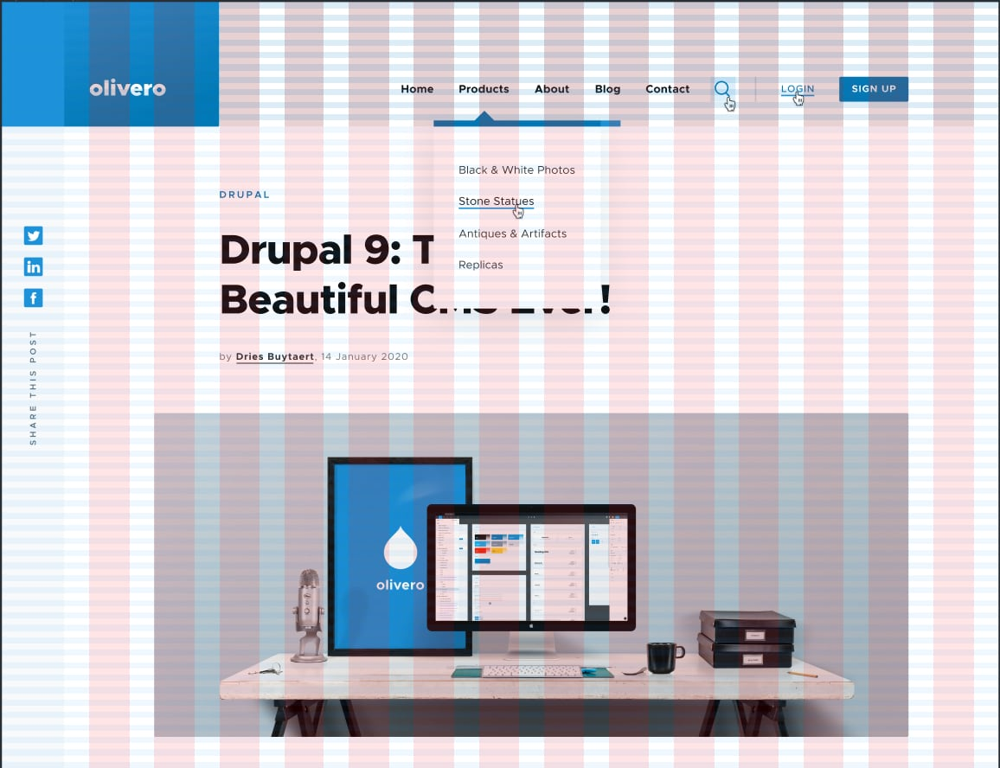
"Vertical Rhythm" describes the visual rhythm of elements as a user scrolls down a page based on things like type size, line height and the margins between paragraphs and headings (and other page elements). We establish vertical rhythm by setting a target height for a VRU (vertical rhythm unit) and then leveraging that proportionally to guide things like line height, paragraph and heading margins, and sectional spacing. We also employ incremental leading when necessary to maintain the proper feel within varied type sizes.
Spacing such as padding and margin will be tied to the VRUs, and the grid system to help create a well balanced design that is predictable and easy to scale.
Typography is based on a scale to help keep type sizing, line-height and spacing consistent throughout the design. The base font used for body copy is 18px. From there, we created sizes for headers, metadata, quotations, and various ui elements. The font size is adjusted for smaller screen sizes.
Fonts utilized in this design are licensed under SIL Open font License 1.1. This license is compatible with the Drupal.org distribution packaging requirements.
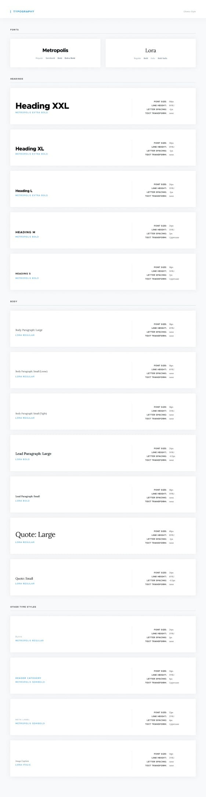
The color palette created uses a bright blue as a base color and introduces neutral grays to help balance out the layout and design elements. The colors chosen help create a modern, bright feel while also bringing in some of the Drupal branding. Darker colors were introduced to help with accessibility while lighter colors are used for supporting design elements throughout the layout.
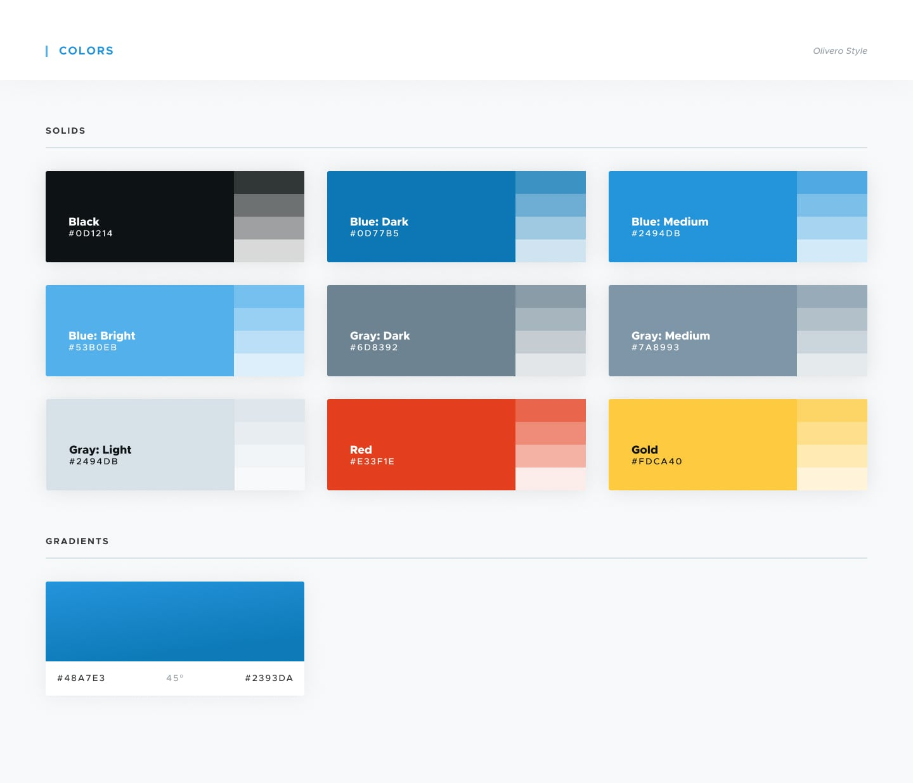
Header & Navigation The header has been designed to accommodate the versatility of text titles or logos. Different versions of the header will display depending on what the user chooses to enable as their site identity (more on this below).
On scroll down, the header will collapse into a hamburger-button menu, allowing the user to always be able to access the menu on longer pages.
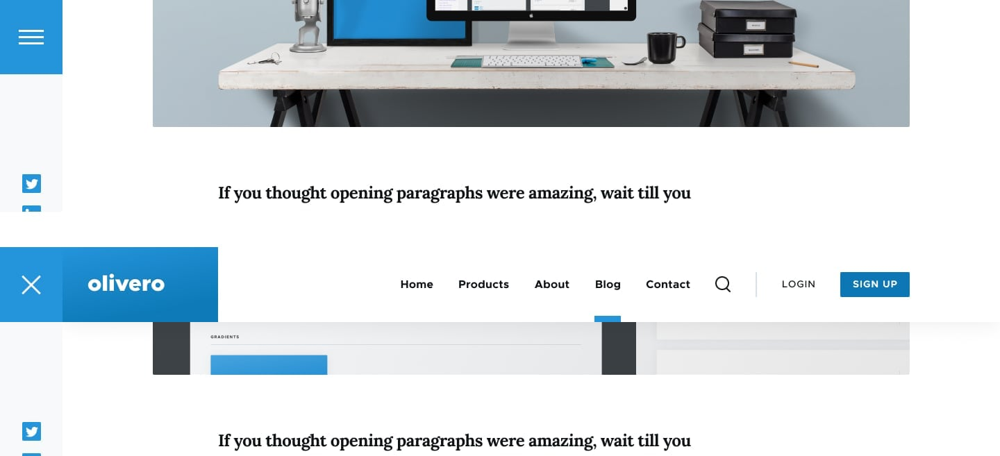
The theme will have an option toggle to turn on hamburger-button based navigation at wide widths. This will be useful in the case where the website has many long first-level navigation items.
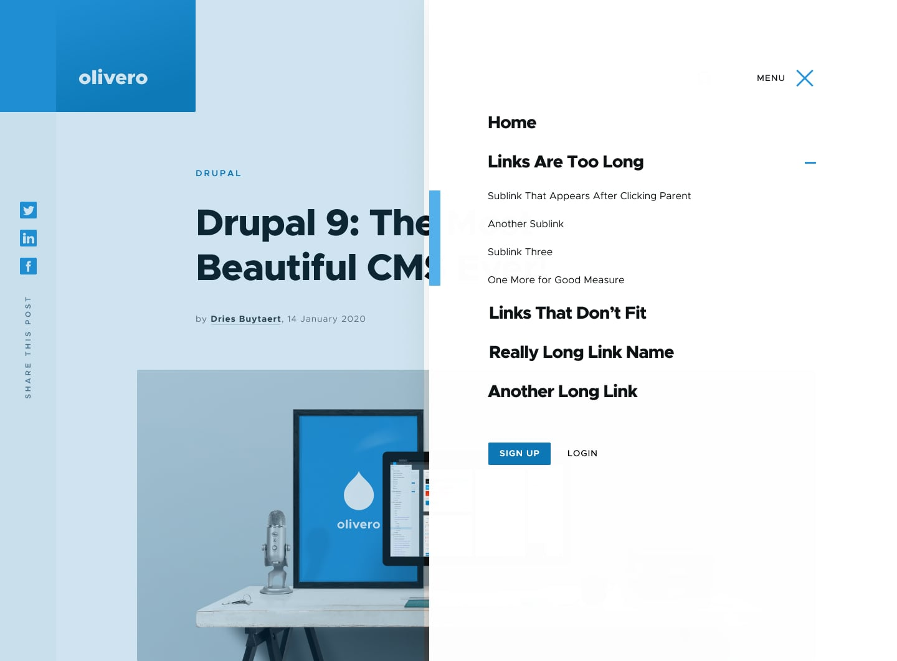
Olivero will also support secondary dropdown menus!
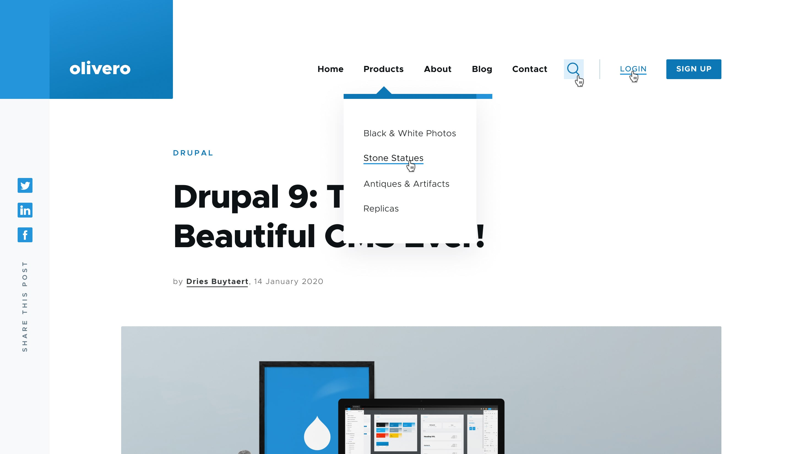
Site branding variations
Theme settings will exist to change the background-color and width (if necessary) of the site-branding to support a wide range of logos and long text.
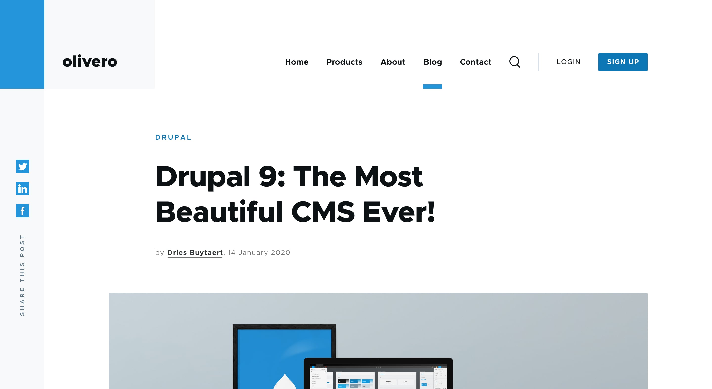
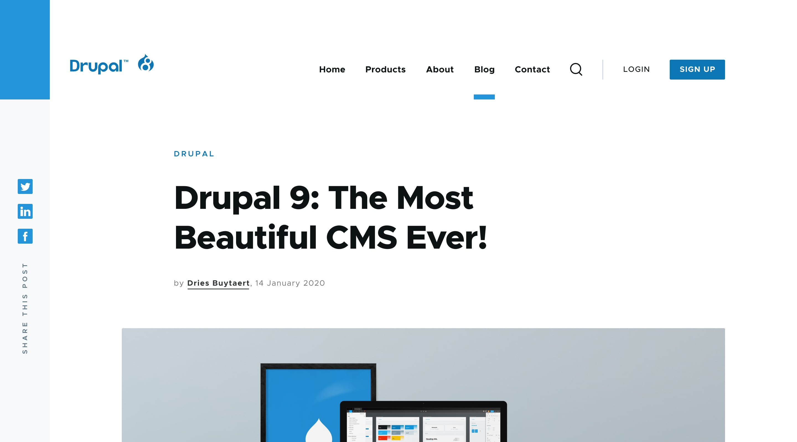
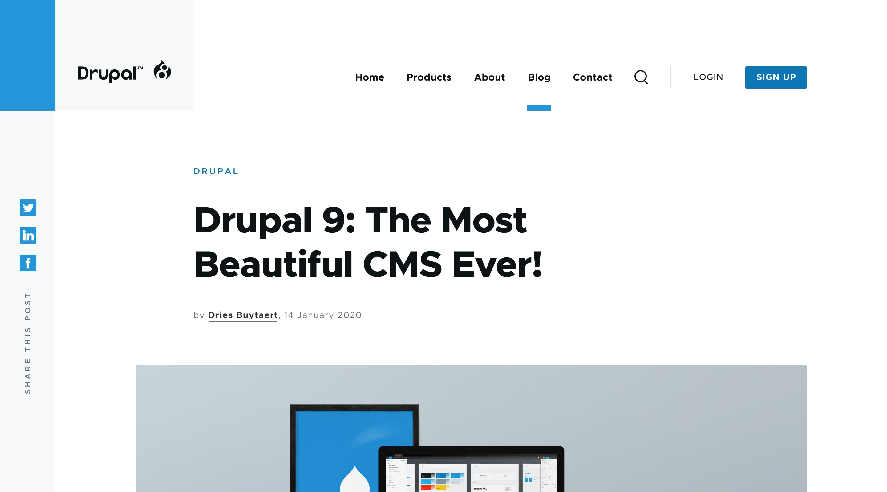
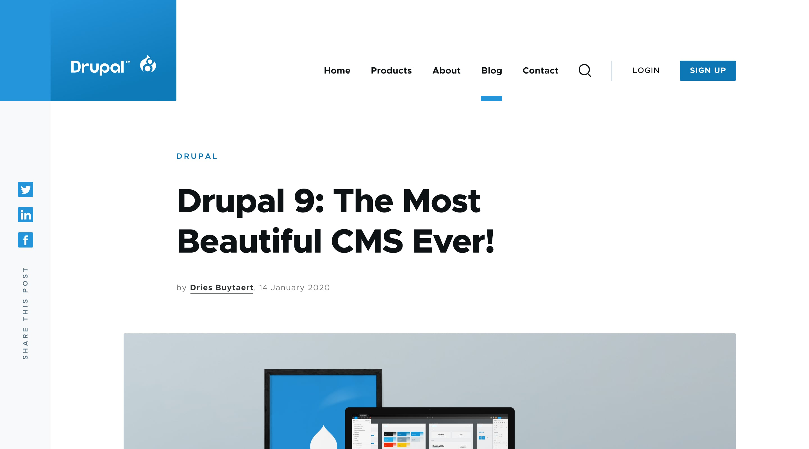
Buttons The goal for buttons is for users to easily recognize a clickable action. For the theme, we designed a primary button style that’s filled, and a secondary button style that’s an outlined version of the button.
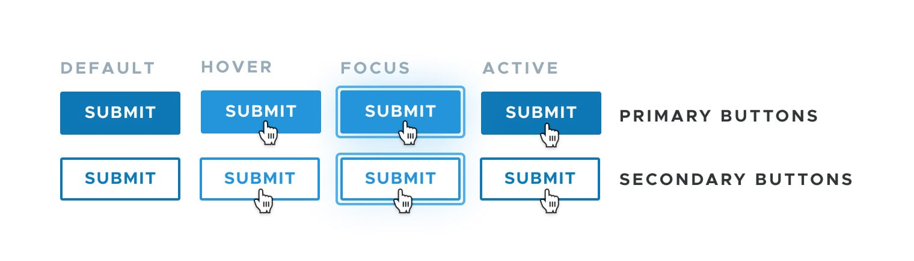
Forms Form inputs are kept simple, yet modern. The goal is to have form elements feel part of the design, while still being recognizable, usable and accessible. The left color bar signals the form element, and labels are placed above the form field to help avoid any confusion. Form fields all have a similar look to help establish that they are a form element. States such as focus, disabled and errors have also been accounted for.
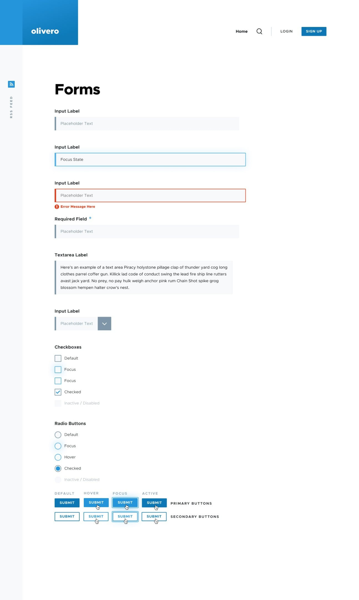
Tables Table divider lines are kept at a minimum to help with readability. The theme will support responsive table features of Drupal.
Sidebar The new default theme supports a single sidebar region that allows content creators to showcase related posts and other types of utility blocks. This region will float next to the primary content. We eliminate the previous adaptation of having two sidebars so that the content stands out in a rich and meaningful way without having to compete for space.
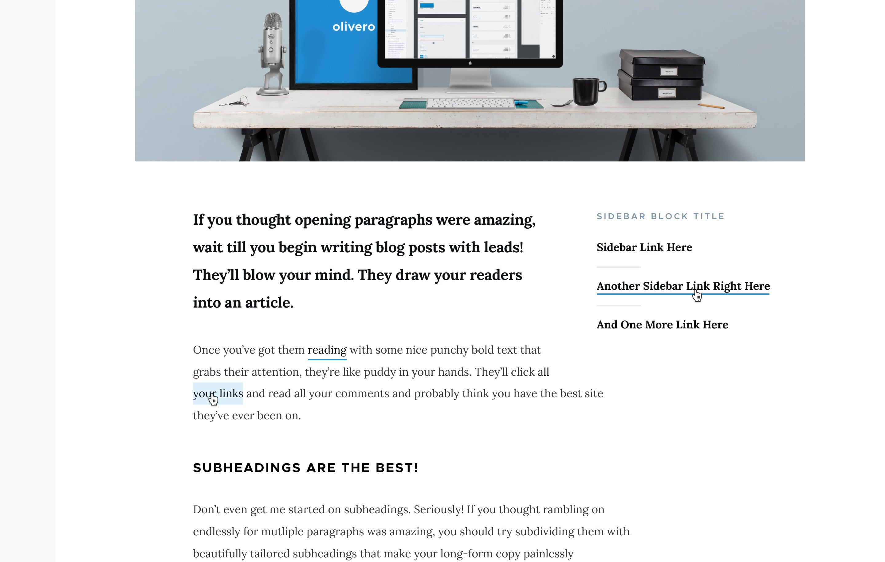
RTL Support The theme will fully support right-to-left languages as required by Drupal core.
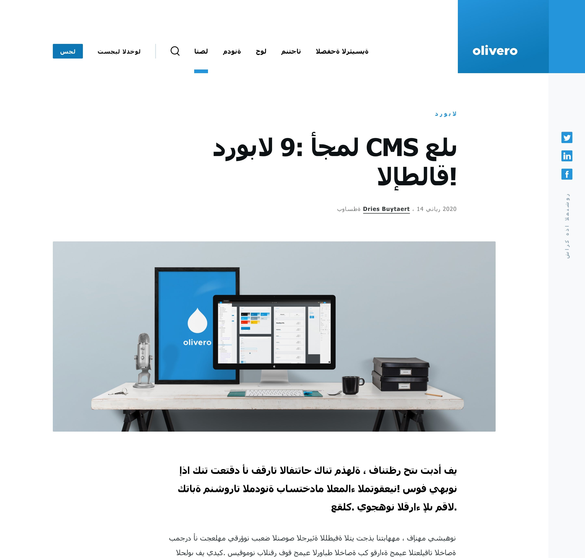
Messages Messages are used to inform the user of an action that they may need to take, important information that they may need to know, or provide feedback on an action already taken. Messages are clear and easily notable. Messages have been designed in a way where bright color is used to highlight the message, but doesn’t interfere with the readability of the message itself. Icons are used to support the type of message that the theme is displaying.
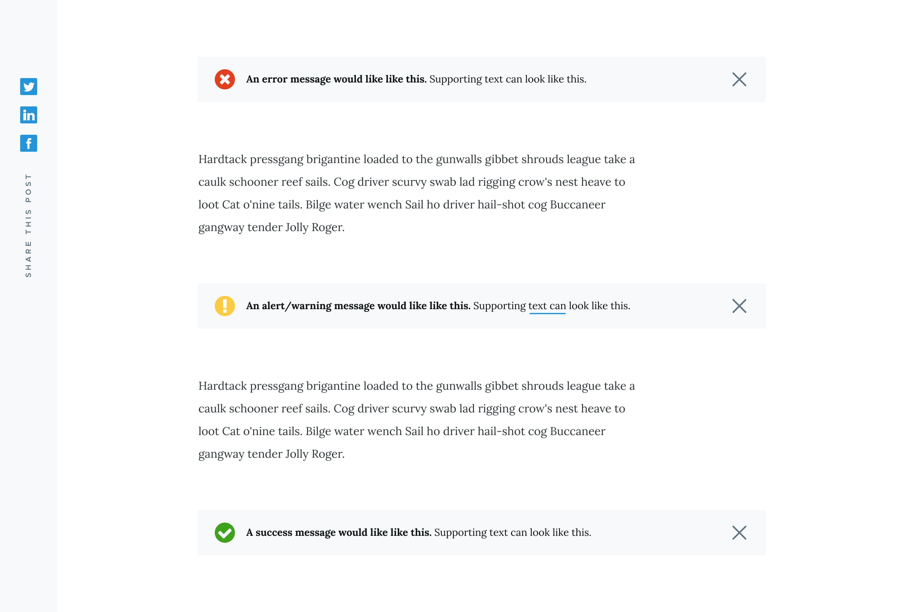
Breadcrumbs The placement of breadcrumbs near the top of the page above the page title is a familiar location where users can instantly identify them as breadcrumbs. Breadcrumb links will be displayed in the link color used throughout the design. On smaller devices, breadcrumbs will displayed left to right or right to left, spilling off the edge of the screen. A visual cue will let users know that there’s more breadcrumbs to see, and they can access those breadcrumbs by swiping left to right or right to left.
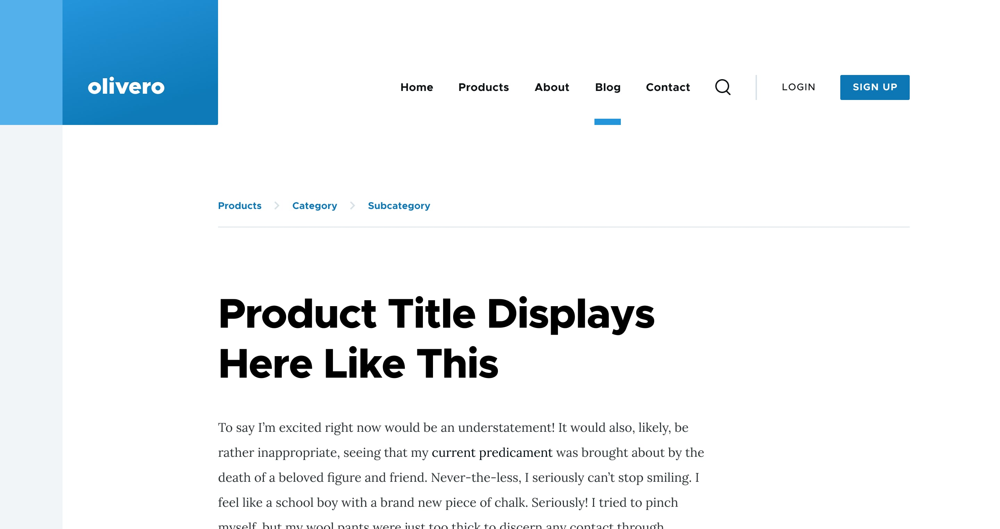
At smaller widths, the breadcrumbs will have a horizontal overflow scroll functionality if the length goes beyond the width of its container. This is a common approach for providing access to the full breadcrumb trail on narrow screens.
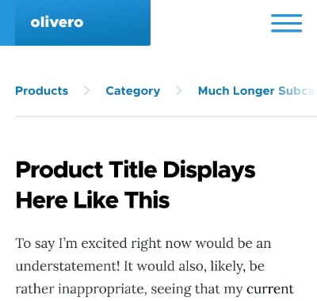
We will not be supporting the Color module within the initial release, but this or similar functionality may be included later. We’re tracking this as a feature request in [#3086514].
Throughout the process, we’ve been building a prototype in static HTML, CSS, and JavaScript. The intention of this is to validate the scroll / header interactions, and ensure they can be made accessible. In addition, we’re validating the use of CSS grid and overall front-end architecture to ensure it can be made to be accessible, as well as work with Internet Explorer 11 (as well as other core supported browsers).
This proof of concept is not yet fully accessible, although it will eventually be made to be. At that point we plan on getting a full sign-off from the Drupal accessibility team, which will hopefully alleviate last minute time-crunches when the patch is submitted to Drupal core.
The proof of concept is at https://olivero-poc.netlify.com, and the git repository for this is at https://github.com/Lullabot/olivero-poc.
Drupal’s current theme, Bartik, was named after Jean Bartik, one of the original programmers for the ENIAC computer. We wanted to continue in that spirit and name this theme after a pioneering female programmer. Earlier this year, the Drupal community mourned the passing of Rachel Olivero, and we have named this new theme in her honor. Rachel touched many people in both the Drupal and accessibility communities. She worked at the United States National Federation of the Blind and she was committed to making technology accessible to ALL people. We chose the name Olivero not just because we have made accessibility a top priority, but also because we aspire to develop this theme in our community in a manner that is consistent with the qualities that Rachel embodied, including patience, generosity, and inclusivity.
Below is the initial team that worked through the designs (alphabetical)
We also had special help and feedback from Kat Shaw in the form of several accessibility reviews.
Our team would love for this to be a wider community effort, and we welcome feedback and thoughts around the style and design system. We have worked iteratively with the stakeholders to come to this point, and will continue to work iteratively with the community to ensure that we complete the best theme possible for Drupal.
We are especially looking for feedback related to the accessibility of the design, and we also want to ensure that the system is flexible with the capabilities of Drupal. This is a volunteer effort, and we will work hard to ensure all comments will be addressed in a thoughtful approach. You can review the Figma here. Please refrain from adding comments directly in Figma.
Feedback will be time-boxed to Friday, November 8th, 2019. We want to keep all feedback and comments in this issue. Please do not leave comments in Figma. If you are interested in having a conversation or want to help out, you can join the Drupal #d9-theme slack channel.